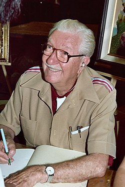

Tietoa Aku Ankasta
Aku Ankka on suosittu sarjakuvahahmo, joka on esiintynyt lukuisissa sarjakuvissa ja animaatioissa ympäri maailmaa. Hän on tunnettu seikkailuistaan, huumoristaan ja persoonallisesta luonteestaan.
Aku Ankka on luotu vuonna 1934 Carl Barksin toimesta, ja hänestä on tullut yksi Disneyn tunnetuimmista hahmoista. Aku Ankka asuu Ankkalinnassa ja hänellä on monia ystäviä, kuten Roope Ankka, Iines Ankka ja Hessu Hopo.
Sarjakuvat kertovat usein Akun kommelluksista ja seikkailuista eri puolilla maailmaa. Hän on myös tunnettu siitä, että hänellä on usein huono tuuri, mutta hän ei koskaan luovuta.

Carl Barks